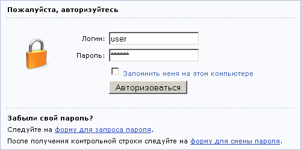

Управление сайтом осуществляется через Административный раздел. Доступ в этот раздел возможен только зарегистрированным пользователям.
Для работы в Административном разделе необходимо авторизоваться на сайте. Для этого:
http://www.имя_сайта/admin/.

Если на странице настроек Главного модуля системы выбрана опция Разрешить запоминание авторизации, то в форме авторизации появится чекбокс Запомнить меня на этом компьютере. Установленный в этом чекбоксе флажок позволит вам не проходить процедуру авторизации при каждом входе в систему.
После успешной авторизации можно приступить к работе в административном разделе продукта.
Система "1С-Битрикс: Управление сайтом" позволяет осуществлять быстрый доступ к управлению сайтом непосредственно из публичного раздела. Для этого надо использовать Административную панель, содержащую набор кнопок для выполнения стандартных операций над элементами сайта:
Административная панель отображается только для авторизованных пользователей. Набор кнопок, выводимый на эту панель, зависит от уровня доступа пользователя к управлению ресурсами сайта. Полный набор кнопок отображается для администраторов сайта.
| © «Битрикс», 2001-2008, «1C-Битрикс», 2008 | 1С-Битрикс: Управление сайтом |